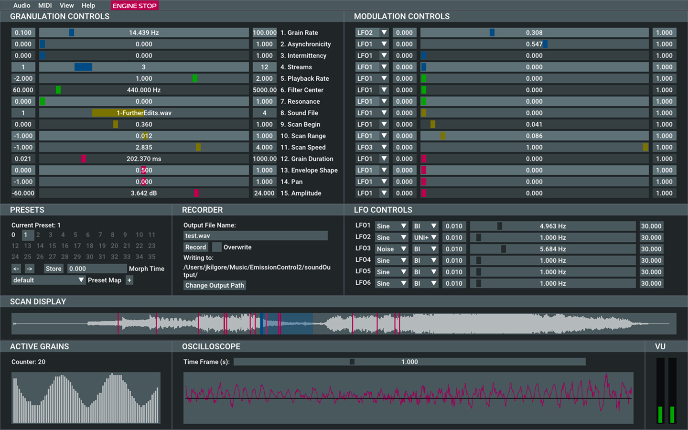

Emission Control 2 (EC2) is an interactive real-time application for granular synthesis and sound file
granulation. The software emphasises fine grain control, powerful modulation, and per-grain signal
processing. EC2 was a collaborative effort with Prof. Curtis Roads (Project Manager, Designer, and
Mentor) and Rodney DuPlessis (Designer, GUI). Note that EC2 is loosely based off of David Thall’s
Emission Control for Supercollider.

Granulation of multiple sound files simultaneously (up to 1 Gb of samples can be loaded)
Up to twelve grain streams in parallel
Synchronous and asynchronous grain emission
Intermittency control
Per-grain signal processing (envelope, waveform, amplitude, frequency, spatial position, filter
center
frequency and resonance)
Modulation control of all granulation parameters with six LFOs (bipolar or unipolar waveforms)
Real-time display of peak amplitude, grain counter, waveform, scan range, scanner, and grain
emission
Scalable GUI and font size
MIDI Learn enables mapping to any MIDI continuous controller.
Code available here.